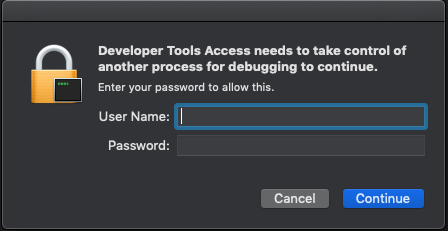

Debugging with LLDB-MI on macOS
The debug adapter for the C/C++ extension utilizes the machine interface mode for both gdb and lldb. To use this interface in lldb, the extension utilizes lldb-mi. The lldb-mi executable was built from the GitHub lldb-mi repository and has a dependency on the LLDB.framework, which is part of Xcode.
Prerequisites
The lldb-mi executable requires LLDB.framework to run.
How to obtain the LLDB.framework
You can get the LLDB.framework one of two ways.
Xcode:
- Open the Apple App Store.
- Search for 'Xcode'.
- Select the Xcode application and then Install.
Xcode Command Line Tools:
- Open a terminal.
- Run
xcode-select --install. - Confirm the prompt.
Example launch.json
Below is an example launch.json debug configuration entry for lldb:
"configurations": [
{
"name": "Launch (lldb)",
"type": "cppdbg",
"request": "launch",
"program": "${workspaceFolder}/a.out",
"args": [],
"stopAtEntry": false,
"cwd": "${workspaceFolder}",
"environment": [],
"externalConsole": false
}
]
If you get a Developer Tools Access prompt
You may see a dialog saying "Developer Tools Access needs to take control of another process for debugging to continue."

If you get this prompt, you will have to enter your username and password to allow debugging.
If you want to permanently dismiss this prompt, you can run the following command in a terminal:
sudo DevToolsSecurity --enable
Additional configurations
Using an LLDB.framework not installed via Xcode
If you want to use an LLDB.framework that is not installed with Xcode, you need to:
Copy the
lldb-miexecutable in~/.vscode/extensions/ms.vscode-cpptools-<version>/debugAdapters/lldb-mi/binto the folder where theLLDB.frameworkis located.Add the full path of
lldb-mitomiDebuggerPathin yourlaunch.jsonconfiguration.
For example, if you have the LLDB.framework folder located at /Users/default/example/, you would:
Copy
~/.vscode/extensions/ms.vscode-cpptools-<version>/debugAdapters/lldb-mi/bin/lldb-miinto/Users/default/example/.Add the following to your existing configuration:
"miDebuggerPath": "/Users/default/example/lldb-mi"
Using a custom-built lldb-mi
If you built your own lldb-mi, you can use it by setting miDebuggerPath to the full path of the executable.